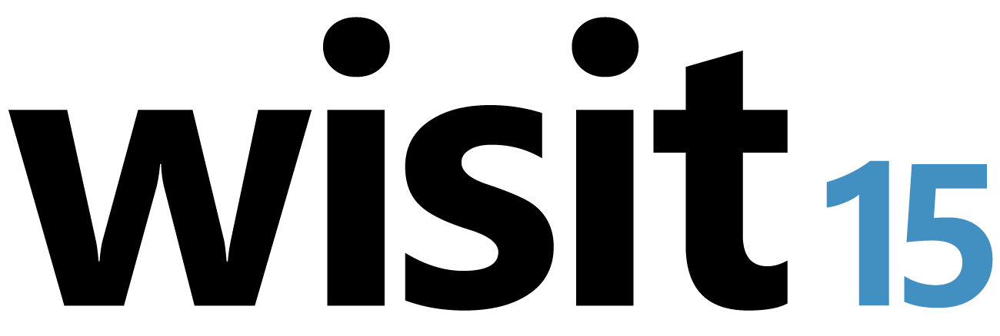
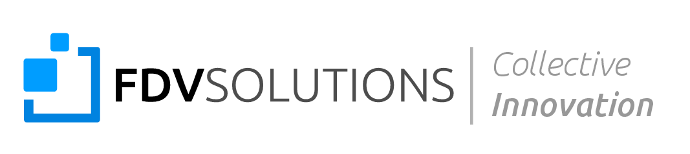
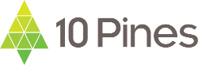
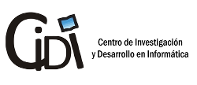

Toggle navigation
Workshop
Hands on
Proponé tu charla
Inscripción
Sponsors

Tercer workshop de ingeniería en sistemas y tecnologías de la información
• evento gratuito •
Faltan
Hands on
12 de Septiembre
Universidad Nacional de Quilmes
Roque Saenz Peña 352
Bernal, Pcia. de Buenos Aires
Más info
Workshop
19 de Septiembre
Universidad
Nacional de Quilmes
Roque Saenz Peña 352
Bernal, Pcia. de Buenos Aires
Inscribite
Más info
Participá
Mostrá tu proyecto
Más info
¿No sabés cómo ir?
Transporte gratuito
Organizan
Sponsors


